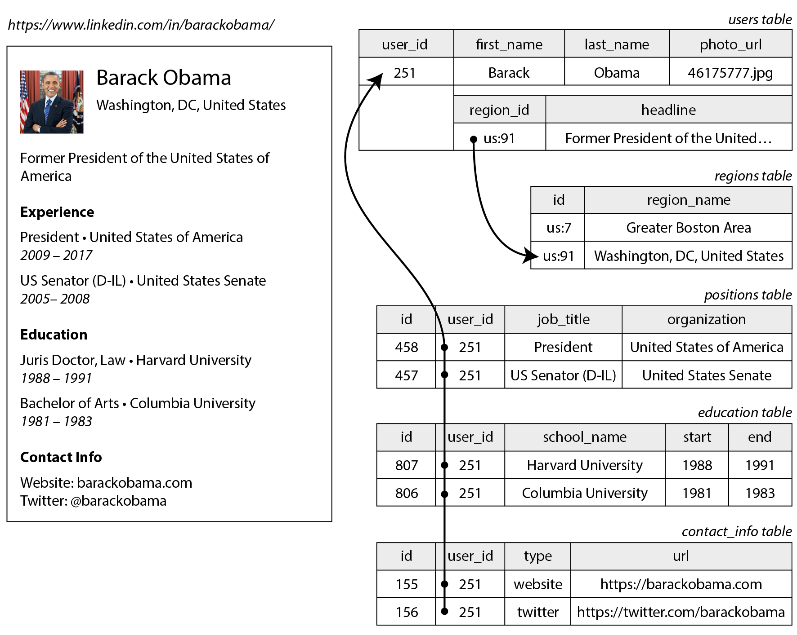
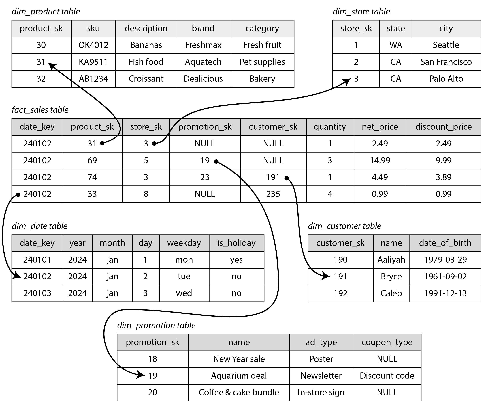
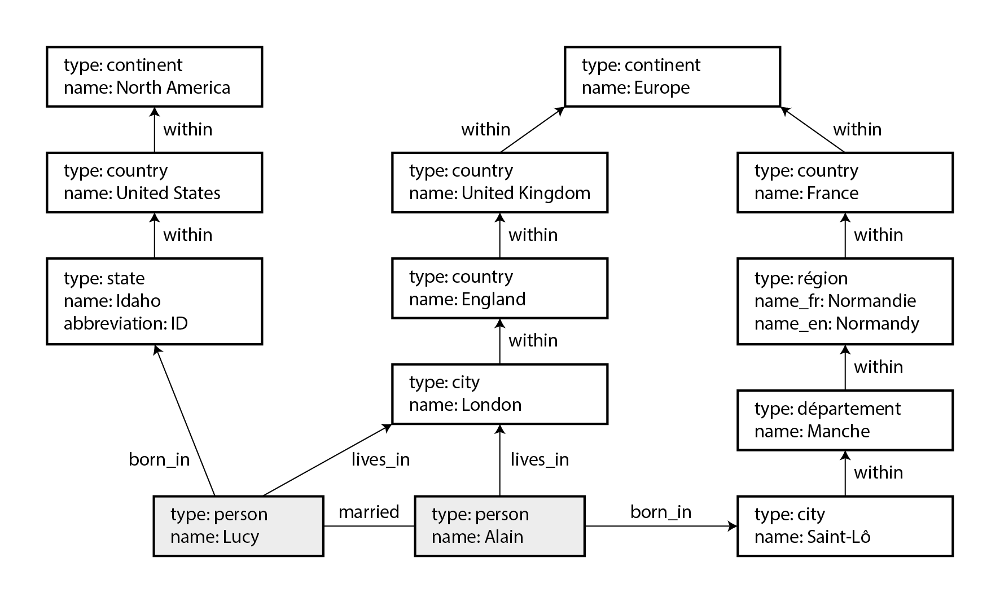
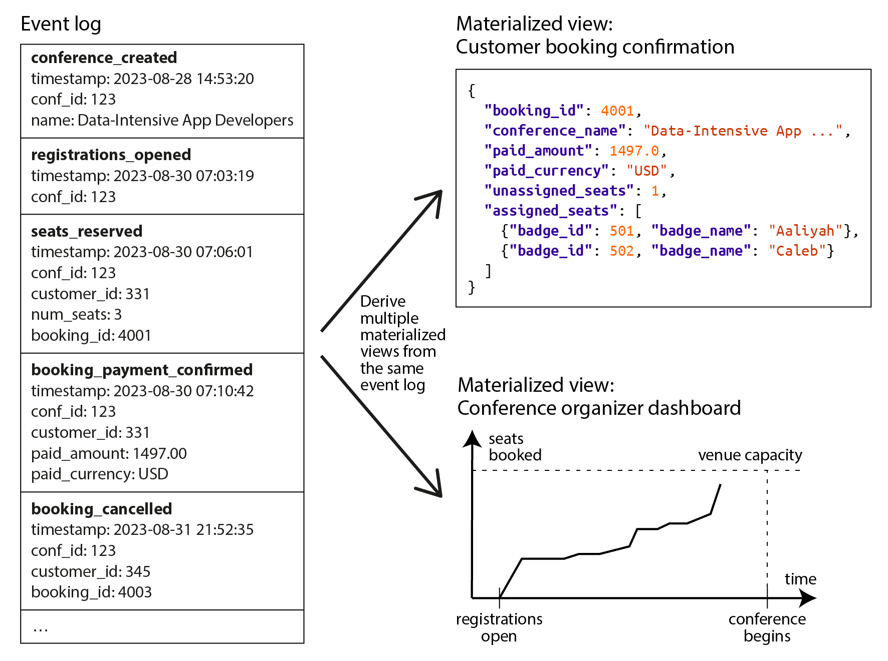
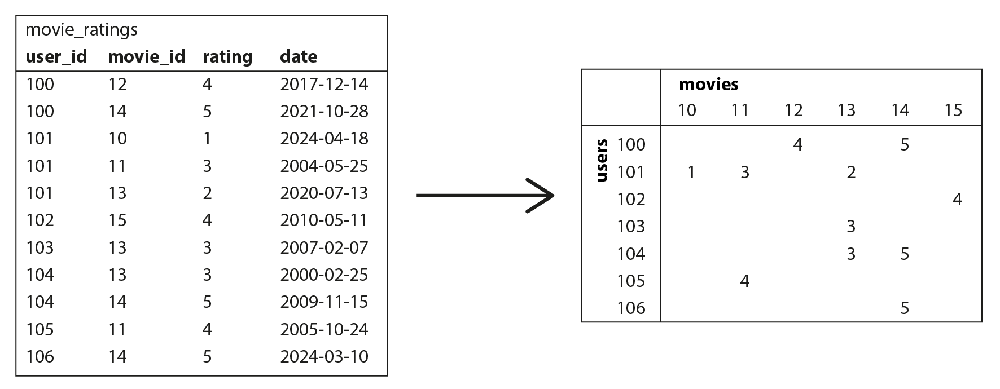

术语表 · 第 3 章 · 课程 3 / 14
数据模型与查询语言
数据模型不是一个「存哪儿」的决定，它是一次打包出售：选关系模型，你同时买下了连接能力和模式约束；选文档模型，你买下了局部性和读时模式，同时签下了「多对多自己想办法」的欠条。这一章的价值不是让你背下五种模型，而是让你在评审里说得出：这个选择往后锁死了哪几件事。
3.1模型是分层套娃，每一层都在藏东西
应用里的数据模型是层层叠加的：应用开发者把现实世界（人、订单、传感器）建模成对象和 API；数据库把对象存成表、JSON 文档或图的顶点与边；存储引擎再把它们编码成磁盘上的字节；硬件最后把字节变成磁场或电荷。每一层的关键问题都是同一个：它是如何用下一层的数据模型来「表示」的。
抽象的意义在这里，也在代价在这里：每一层都隐藏了下层的复杂性，因此两拨人可以分工——数据库厂商的工程师管页缓存和 B 树，应用工程师管业务对象。但当你选的模型和你的查询形状不匹配时，你无法从上层「绕过」下层：比如用文档库存一个需要反复双向查询的多对多关系，你会一直在应用代码里手写 join，而这个 join 的执行计划（索引、遍历顺序、批量化）全部由你负责，不再有优化器替你兜底。
本章比较五种模型：关系模型（relational model）、文档模型（document model）、图数据模型（graph data model）、事件溯源（event sourcing）、数据框（dataframe）。记住一条主线：模型的价值由「数据里主要是什么形状的关系」决定，而不是由厂商的营销词决定。
3.2关系模型的起点：一对多要靠拆表
关系模型由 Codd 在 1970 年提出：数据组织成关系（relation，SQL 里叫表），每个关系是元组（tuple，行）的无序集合，每一列有明确的类型和约束。它赢下几十年的原因是那个当时被怀疑的点：它能不能被高效实现。答案是能，而且优化器让同一句 SQL 可以随数据分布、索引、机器数量改变执行方式，而不需要改查询本身。
但关系模型处理「一个人有多段工作经历」时，必须把简历拆成多张表：users、positions、education、contact_info，再用外键指回 users。而这个形状在应用内存里本来就是一棵树——一个对象里有数组，数组里有对象。两边形状不一致，中间就需要一层转换，这个脱节叫阻抗不匹配（impedance mismatch，词借自电子学里两个电路阻抗不匹配会反射信号）。

user_id 外键指回 users。树被摊平成一组表。同一份资料写成 JSON 就是一个文档，一次读取拿到全部内容：这是存储局部性（locality）带来的好处。关系模型要取回整份简历，要么按 user_id 查四张表再在应用里拼，要么写一条四路连接。JSON 表示则明确呈现了这棵树——一对多的数据天然是一棵树，见图 3-2。
这里的边界必须记牢：原文用的是「一对少」（one-to-few）这个词。简历只有几段经历，嵌进文档合理。如果相关项目可能多到惊人——名人帖子有几十万条评论——把它们全塞进一个文档就既笨重又危险：每次加一条评论都要重写整个文档，文档越大写放大越严重。这种情况下该回到关系模型。
3.3文档模型解决了一对多，但把多对多留给了你
文档模型真正擅长的是「一次加载整棵树」的场景。它不擅长的是另一种关系：多对多。一个人曾在多家组织任职，一家组织有多名员工——这个关系塞不进任何一份自包含文档，只能靠 ID 引用。
文档库里做多对多，标准做法是两种，两种都有代价：
- 应用层 join。先取回简历文档，从中拿到
org_id列表，再发一次$in查询取组织文档，最后在代码里合并。MongoDB 的聚合管道有$lookup算子可以声明式地做这件事，但很多文档库根本不支持连接，只能手写。你要自己负责批量化（否则就是 N+1）、自己负责索引、自己负责两个查询之间数据已经变了的情况。 - 两端都存引用（反规范化）。简历里存组织 ID，组织文档里也存简历 ID。这样两个方向都能查，但同一份关系存了两份，两边可能不一致：组织改名后，一边更新了、另一边没更新。
关系模型在这里反而是更省心的：多对多用一个关联表（associative table，也叫连接表）表示，每行只把两个 ID 关联起来，关系只存一份；再对两个 ID 列各建二级索引，就能从任意方向高效查。索引是数据库的活，不是你的活。

反过来说，关系模型也不是没有账单。它的模式是写时模式（schema-on-write）：写入前就校验，好处是读代码可以放心假设结构，坏处是改结构要迁移。ALTER TABLE ... ADD COLUMN ... DEFAULT NULL 在多数数据库里很快，但给大表做 UPDATE 回填要重写每一行，改列类型往往要复制整张表。大表上的迁移必须靠后台工具慢慢做，这在运维上是真金白银的成本——和文档模型「每个读取点都得处理历史格式」是同一种成本的两种形状。
3.4规范化与反规范化的双向代价
这一节是整章最该背下来的一段，因为它把「文档好还是关系好」这种口味之争换成了两个可测的量：写代价和读代价。
一般来说，规范化数据写入较快（因为只有一个副本），查询却较慢（因为需要连接）；反规范化数据通常读取较快（连接更少），写入代价却更高（要更新更多副本，也占用更多磁盘空间）。把反规范化看作一种衍生数据或许很有帮助，因为你必须建立相应流程来更新那些冗余的数据副本。
「必须建立相应流程」这半句是重点。反规范化不是「少写一次 join」这么简单，它把一个数据库内能保证的不变式（外键指向的行一定存在、字段一定同步）变成了一个由你的代码维护的分布式一致性问题。关系库用外键和事务守住的东西，你改用双写来守——那就得回答：写第二个副本失败怎么办？两个副本之间差多久？读到一个旧副本时业务能接受吗？
还有一个必须点出来的事实：反规范化的方案可以是部分的。X（原 Twitter）的物化时间线只存帖子 ID 和作者 ID，不存正文，也不存点赞数——因为这些数据变得太快。读的时候再用 ID 去取正文、取作者资料，这个动作叫补全 ID（hydrating IDs），本质上就是在应用层做连接。原文的判断很关键：读取时需要连接，并不会妨碍你构建高性能、可伸缩的服务；补全 ID 很适合并行，成本既不取决于你关注了多少人，也不取决于多少人关注你。
所以「要不要反规范化」没有统一答案，要看的是一组具体数字：被复制的那份数据变化频率多高、读路径调用几次、规模到哪一档时连接真的成为瓶颈。原文的排序是：OLTP 通常更适合规范化；分析系统更适合反规范化（批量写、只读查询为主）；中小规模规范化更省心，超大规模连接的代价才可能成为问题。
3.5声明式 vs 命令式：把选择权交给优化器
SQL、Cypher、SPARQL、Datalog 都是声明式（declarative）语言：你说「我要什么」，不说「怎么算」。这个区别不是风格问题，它决定了性能归谁负责。
在声明式查询语言中，你只需指定所需数据的模式——结果必须符合哪些条件，以及数据应如何转换——而不必说明如何实现这一目标。数据库系统的查询优化器决定使用哪些索引和连接算法，以及以何种顺序执行查询的各个部分。声明式查询语言通常比显式算法更加简洁，也更容易编写；但更重要的是，它隐藏了查询引擎的实现细节，使数据库系统可以在无须对查询做任何修改的情况下提升性能。
「无须对查询做任何修改的情况下提升性能」——这一句是所有查询语言存在的理由。你写的一句 SQL 在数据量从 10 万涨到 10 亿时可以换执行计划：从全表扫变成索引扫，从嵌套循环变成哈希连接，从单机变成多机并行。手写的遍历代码做不到这一点，因为「怎么算」被硬编码进了你的程序。这也是为什么 SQL 活了五十年，而各种「更优雅的查询 DSL」一批批消失。
对底层读者，这条可以落到一句更硬的话：声明式接口让你能把优化放在正确的层次上。索引、页缓存、预读、并行度这些决策需要知道数据的统计信息（基数、分布、选择率），而这些信息只有存储层有。你在应用层手写循环，等于在没有统计信息的情况下做执行计划。
命令式的代价在数据框那一节会以另一种形式回来：pandas 风格的链式操作是逐步修改的，中间结果物化，每一步都独立执行。这适合探索式分析（「一点点把数据揉成能回答当前问题的形状」），不适合把同一套逻辑反复跑在 PB 级数据上。
3.6什么时候该上图模型
判断标准只有一条：多对多是否普遍，以及 join 的深度是否事先不可知。如果数据大多是一对多的树，文档模型够了；如果关系是简单的多对多，关系模型加关联表够了；但如果「任何东西都可能和任何东西相连」，而且查询要沿着路径走好几跳，图模型才自然。
典型场景：社交图（人是顶点，认识是边）、网页图（PageRank）、道路网（最短路径）、知识图谱（组织、人物、地点的事实）。它们共同的特征是异构：顶点和边的类型很多，而且还在增加。

「找出所有从美国移居欧洲的人」这个查询，是图与关系模型差距的样板。用 Cypher 是四行：从人出发，沿 BORN_IN 再沿零或多层 WITHIN*0.. 到达美国，同时沿 LIVES_IN 再沿 WITHIN*0.. 到达欧洲。用 SQL 也能写，但要靠 WITH RECURSIVE（递归公用表表达式，SQL:1999 起支持），原文的对比是四行对三十一行，而且还要自己处理环、自己选广度优先还是深度优先。
根因不是语法啰嗦，是关系模型的连接次数必须在写查询时确定，而图查询的跳数在找到目标顶点前是未知的。用 SQL 表达变长路径，等于把「执行计划」写进查询里——优化器没有空间了。这也正好呼应上一节：声明式的价值在于把「走几跳」留给引擎，图查询语言在这一点上比 SQL 更声明式。
图模型不适合什么？三点要能当场说出来：① 聚合分析——「过去一年每个品类的销售额」这类扫描大量行做分组的活，列存 + 星型模式快得多，图遍历毫无优势；② 实体数量极大但关系稀疏——每个顶点平均不到一条边时，图的灵活性换不来任何查询收益，反而多了一层抽象；③ 一条边只能连两个顶点——这是原文点明的局限，要表示三元及以上的关系，得为关联表每行建一个顶点，或者上超图（hypergraph）。另外，图库的写入吞吐和事务能力通常不如成熟关系库，把交易系统主库换成图库往往是拿主要矛盾去换次要矛盾。
3.7事件溯源与 CQRS：写入和读取可以分开选模型
前面所有模型都假设一件事：数据按写入时的形式被查询。文档、行、顶点都是这样。但复杂业务里常常找不到一种表示能同时满足所有读写需求。那就换个思路——用一种形式写，派生多种针对读取优化的表示。
最简单、最快、表意最清楚的写入形式是事件日志（event log）：每次状态变化都编码成一个自包含的记录（通常带时间戳），追加到日志末尾。日志里的东西不可变（immutable）——你从不修改或删除事件，只追加新事件，后来的事件可以取代先前事件的效力。

这套做法叫事件溯源（event sourcing）；配套的原则叫CQRS（Command Query Responsibility Segregation，命令查询责任分离）——写入侧处理命令、校验、产生事件，读取侧维护独立的、为查询优化的表示。两者来自领域驱动设计社区，但思想更老，分布式系统里叫状态机复制（state machine replication）。
有一条规则必须钉死：命令与事件不同。用户请求刚到达时是命令，需要校验（座位够不够）；只有执行成功、确认有效之后，它才成为事实，事件才追加进日志。因此日志里只能有有效事件，消费日志构建视图的组件不允许拒绝事件。这一条设计对了，视图重建才有意义；设计错了，视图会带着「本来不该存在的事件」一路走下去，而且你无法修——因为权威源已经脏了。
事件溯源最值钱的性质是可重放：随时可以删掉物化视图，用同一套代码、按同样顺序重放同样的事件，重新算出来。视图代码有 bug？删掉重算。想看某天的中间状态？从头重放到那天。这就是为什么事件日志在很多系统里同时充当审计日志——它记录的不是「现在是什么」，而是「为什么会变成这样」。
这条线索直接通向本书后半部分：第 11 章讲批处理怎么从不可变输入重算派生数据，第 12 章讲变更数据捕获（CDC）与事件日志如何用流处理器保持视图最新，第 13 章讲「应用就是日志 + 派生视图」这个统一视角，第 10 章则要回答那个唯一的硬要求——所有视图必须按事件在日志中出现的顺序处理它们，而在分布式系统里保证全局顺序并不容易。
缺点也要能说：涉及外部信息时结果必须确定（汇率要写进事件，或能查历史汇率，否则今天重算和昨天重算结果不同）；事件不可变与「删除个人数据」的权利（如 GDPR）冲突，只能靠每用户独立日志、把个人数据移到事件外、或用密钥加密后删密钥；重建视图时不能重放有外部副作用的操作（别每次都再发一遍确认邮件）。
3.8数据框：第二版新增的那一层抽象
数据框（dataframe）在 R、pandas、Spark、Polars 里已经是事实标准。它看起来像表，也像电子表格：支持按行应用函数、按条件筛选、分组聚合、按键合并（merge，就是关系库的连接）。但它和关系模型的差别在两处。
第一，它是命令式的逐步变换，不是一句声明式查询。数据科学家的工作方式是「一点点把数据揉成能回答当前问题的形状」，每一步都能看见中间结果、随时改。这恰恰是 SQL 不擅长的地方：SQL 一句写完，中间结果不可见，改一步要重写整句。原文的说法是，这些操作通常发生在数据科学家私有的数据副本上，往往就在本机。
第二，它能做关系库做不到的事：把表变成矩阵。图 3-9 那个例子——用户对电影的评分表，转换成「行是用户、列是电影」的矩阵——在关系库里是很别扭的（列数动态、可能上万列），在数据框里是一行 pivot。矩阵只能装数字，所以非数值列要编码：日期缩放成浮点，类别用独热编码（one-hot encoding）展开成多列 0/1。而矩阵正是线性代数的输入，线性代数又是大多数机器学习算法的基础。

数据框在分析领域赢下事实标准，原因可以压成一句：它把「一张表的变换」这一层抽象做到了刚好的粒度——比 SQL 更可调试（每步可见），比手写循环更高效（底层有列存和向量化执行），又天然通向矩阵。它也承接了关系模型没覆盖的需求：上百列、稀疏、需要数值化。这也是为什么现代数仓（DuckDB、ClickHouse、Spark）都在同时提供 SQL 和 DataFrame 两套接口，而不是二选一。
3.9反例：文档库存多对多，读路径被应用层 join 拖死
这个反例的形状在原文里被反复点名：文档库不擅长连接，多对多不该硬塞进文档。真实系统里它通常长这样。
反例：用文档模型存「组织—员工」，在应用层补 join
一个招聘/职场类产品，主库选了 MongoDB。数据这样放：profiles 集合每人一份文档，里面 positions 数组每项存 {org_name, title, start, end}；orgs 集合每家组织一份文档，里面存 {name, logo_url, employee_ids: [...]}。
两个方向的查询都有：个人页要显示「他在哪几家公司待过」，公司页要显示「谁在这家公司待过」。为了保证两向都能查，写入时双写：更新简历同时更新组织的 employee_ids。单条写入还包在一个「尽力而为」的事务里，失败就重试队列补。
① 两个副本会漂移。双写不是原子操作。组织改名后简历里的 org_name 只更新了一部分（重试队列积压时尤其明显），于是搜索页和公司页显示的旧名字对不上——这个 bug 会持续几周，因为没人知道哪一份是「对的」。
② 公司页的读路径是 N+1 的平方。取公司页：读出 employee_ids（几千个），分批 $in 查 profiles，再对每个 profile 的 positions 数组做一次内存过滤，找出「在这家公司的那一段」。这一步没有索引可用，成本随员工数线性增长；公司越大越慢，而大公司正是最值钱的数据。
③ 写放大会随数组长度恶化。employee_ids 涨到几万条时，每次新员工入职都是一次大文档重写；MongoDB 的文档大小上限和写放大一起把你钉在墙上。原文对这种情况的判断很直接：相关项目可能多到惊人时，嵌进同一个文档就太过笨重，应该回到关系方法。
④ 最隐蔽的一条：你失去了优化器。关系库里 positions(user_id, org_id) 两个二级索引，两个方向的查询都由数据库决定执行计划。现在你的「执行计划」写死在应用代码的循环里，数据分布变了也不会变，也没人给你做选择率估算。
改法：把多对多还给关系模型。用一个 positions 关联表（user_id、org_id、title、start、end），对 user_id 和 org_id 各建索引；组织名和 logo 只存一份在 orgs 表里，个人页查询时连接取回。如果读压力确实大，再加一层可重建的物化视图（物化视图是衍生数据，随时能删了重算），而不是把它当权威数据双写。文档模型留给真正是一对多的部分：简历里的联系方式、教育经历这些「一对少」的字段。原文的结论正是这个：可伸缩性最好的方案，可能是让一部分数据反规范化，同时让另一部分保持规范化。
这个反例的通用教训：文档模型的灵活性只在一对多的树上成立。当你需要「两个方向都能查」，你面对的是多对多，需要的是一张只存一份关系、两边都有索引的表——这正好是关系模型的主场。选错模型的代价不是多写几行代码，是你要在应用层重新实现索引、连接、一致性和批量优化。
练习判断该用哪个模型
五段真实的系统描述。每一段只有一个「最合适」的模型，但重点不是选对，而是你能不能说出为什么不选另一个。
一个 SaaS 的工单系统：每张工单有标题、状态、若干条评论、若干附件、一个指派人。前端一次加载整张工单页面，评论最多几十条，几乎不需要跨工单查询。
典型的一对多树，一次加载整棵树——文档模型的教科书场景，还顺带拿到存储局部性。评论是「一对少」，嵌进文档没问题；如果评论会到十万条级别，就该拆出去变成一对多之外的关系。
一个供应链系统：物料、供应商、工厂、订单之间是多对多，而且经常要查「这批原料经手的供应商里，有没有和被召回批次共享上游的」——跳数不固定，可能三跳也可能七跳。
判据是「join 深度事先不可知」。关系模型能表达，但要写递归 CTE，还得自己处理环和遍历顺序；图的 *0.. 正是为这种变长路径设计的。反过来，如果这类追溯查询一天只跑一次、而日常是订单 CRUD，那关系的整体成本更低——图模型赢在查询，不一定赢在系统。
一个电商的数据仓库：每天几亿条订单明细，分析师要按品类、门店、月份、促销活动切分销售额，事实表 120 列，查询几乎全是聚合，不更新历史。
分析场景优先反规范化、优先扫描性能。星型模式（事实表 + 维度表）是它的标准形状，维度甚至日期都单独成表以便编码节假日。这里关系模型赢不是因为「正统」，而是因为聚合查询要的是顺序扫描加列存，图遍历帮不上忙。
一个会议票务系统：座位可以个人购买、企业批量预订后分配、演讲者占预留位、订单可取消、场地容量会变。运营要实时看余位，财务要对账，现场要打胸牌。
这就是图 3-8 的例子。多个消费方要的视图完全不同（余位、对账、胸牌），只存当前状态会丢掉「为什么变成这样」，而且每加一个视图就要改主表。事件溯源让写入只做一件事（追加事件），视图各自优化、各自可重建。代价是要保证事件顺序，且事件不可变与删除个人数据有冲突。
一个推荐团队：拿到用户—电影评分表，要转成稀疏矩阵做矩阵分解，还要在 notebook 里一步步试特征、看中间分布。
数据框的两个优势同时命中：逐步变换、中间结果可见（探索式工作需要），以及从表到矩阵的顺手转换（图 3-9）。关系库也能透视，但列数动态、上万列时很别扭；而矩阵正是机器学习算法的输入格式。注意这不是「数据框比 SQL 强」，而是这一层工作恰好是它的形状。
→面试里怎么答
被问「这个系统你选什么数据模型」时，别报产品名，报形状和代价：
「我先看数据里主要是什么关系。如果是一对多的树、而且总是整棵树一起读，我会选文档模型——它省掉了拆表和连接，还拿到局部性。但我会先确认它是一对少：如果子项可能到十万级，嵌进文档会导致每次追加都重写整个文档，那就该拆回关系表。
如果多对多是普遍情况，尤其两个方向都要查，我会用关系模型加关联表，两边各建索引。文档库也能做多对多，但要靠应用层 join 或者两端冗余引用；前者意味着我自己负责批量化和索引，后者意味着我承担两个副本漂移的一致性责任。这两条我都说得清代价，但我不会假装它们是免费的。
如果 join 深度事先不可知——比如供应链追溯、社交图——我会上图模型，因为 Cypher 的
*0..表达的是变长路径，而 SQL 要写递归 CTE，等于把执行计划写进查询。反过来，如果主负载是聚合分析，图遍历没有优势，星型模式加列存更合适。还有一条我会主动提：声明式查询的价值是把执行计划交给优化器。同一句 SQL 在数据量涨一千倍时可以换索引、换连接算法、换并行度，而不用改查询。所以我会尽量把查询留在声明式这一侧，把优化留给引擎而不是写进应用代码。
最后，如果这个业务有多个差异很大的读视图，我会考虑事件溯源加 CQRS：写侧只追加不可变事件，读侧各自物化。前提是事件顺序能被保证，而且我接受视图最终一致。」
这段答法的结构值得抄：每种选择都带一个「先确认」的前置条件，每个前置条件都对应一个具体的失效场景。面试官追问「如果数据量再大十倍」，你的答案已经在里面了——连接成本成为问题时，才反规范化；而不是一开始就反规范化。
→带走什么
这一章真正的结论是一句：数据模型是一次打包选择，你选的不只是存储格式，还有一整套后续约束。文档模型给你局部性和读时模式，代价是多对多要自己解决；关系模型给你连接、约束和成熟的优化器，代价是模式迁移和拆表的复杂度；图模型给你变长路径，代价是聚合分析和事务能力；事件溯源给你可重放和审计，代价是顺序保证与删除权；数据框给你探索式的逐步变换和通往矩阵的路，代价是它不负责并发和持久化保证。
原文总结里还有一句值得单独记住：一个模型可以用另一个模型来模拟，但结果可能很别扭。图数据能存在关系库里，就像递归查询在 SQL 里的样子——能跑，但你在为错配付利息。所以正确的问题不是「哪个模型最好」，而是「我的数据形状和查询形状，哪一个模型的假设先被破掉」。
贴进架构评审文档的话：「主数据模型选关系模型 + 星型模式（分析侧），理由是主要负载为多维聚合与多对多关联查询，连接与二级索引由优化器承担；一对多的简历/配置类数据以 JSONB 列存放，保留局部性但不作为跨实体关系的权威表示。不使用文档库承载组织—员工多对多，因为它会把连接、索引与两端一致性移到应用层。派生数据（物化视图、时间线、报表）一律标记为可重建的衍生数据，权威源为原始事件/原始表；事件日志按不可变追加存储，视图重建必须可重放且处理顺序与日志一致。」
一手资源
第 3 章 数据模型与查询语言（中文全译）：重点读「规范化、反规范化与连接」和「事件溯源与 CQRS」两节。前者给你双向代价的具体数字感，后者是第 11–13 章整条线的入口。
Vonng/ddia（GitHub）：中文全译仓库，勘误和术语表都在这里，遇到译名和英文对不上时以它为准。
随时问我
把你现在那张核心表的结构贴给我——尤其是那些「一个字段里塞了 JSON 数组」或者「两个表互相存对方 ID」的地方。我们一起看它其实是哪种关系，以及这个模型往后会锁死哪几件事。